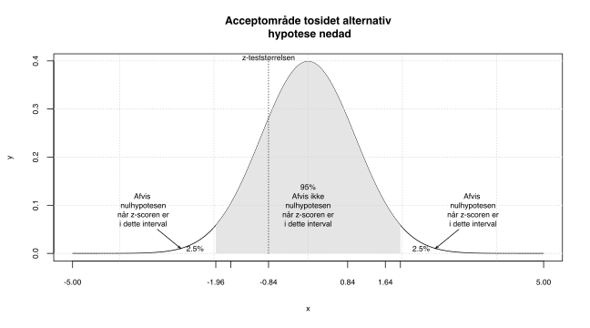
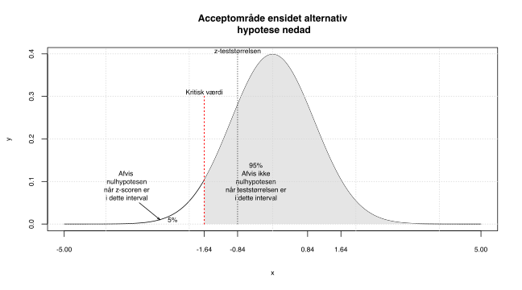
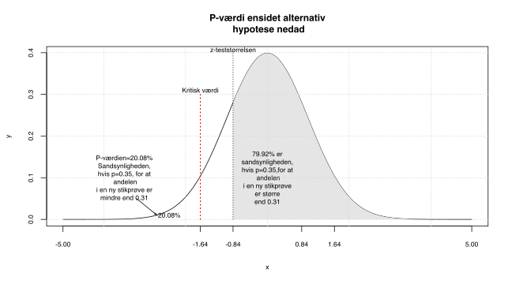
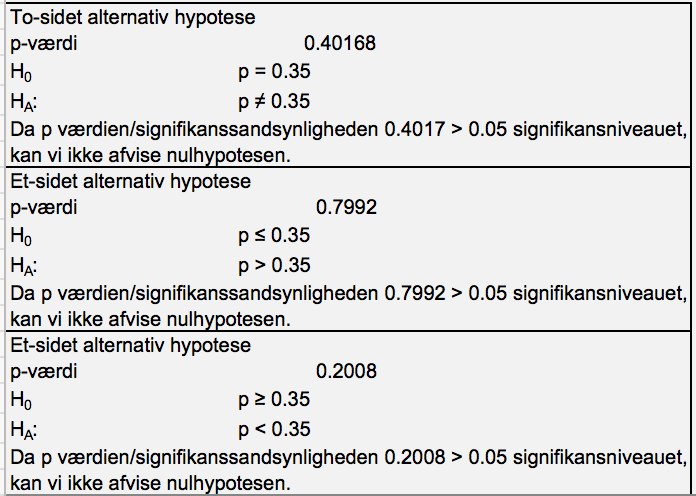
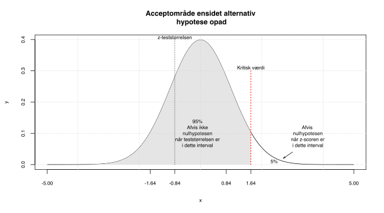
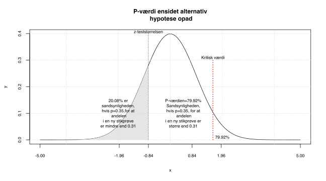
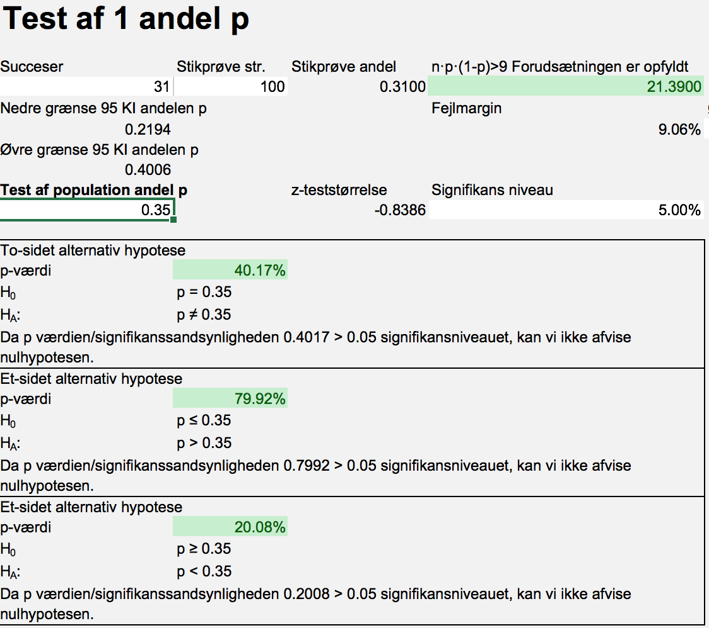

Kapitel 7 1 Andel
7.1 Parameterestimat for andele
Hvis vi har spurgt 100 danskere om de bruger MobilePay, er vi ikke specifikt interesseret i hvor mange af netop disse 100 personer, der benytter MobilePay. Vi har udtaget en stikprøve af en population (populationen er her alle danskere med en konto), som vi benytter til at udtale os om, hvor stor en andel i populationen, der kan antages at benytte MobilePay. Hvis 31 ud af 100 danskere bruger MobilePay, er vores bedste gæt på andelen i populationen der benytter MobilePay 0.31. Vi er imidlertid godt klar over, at det ville være højst besynderligt, at netop 31,000…% af alle danskere benytter MobilePay. Vi kalder \(\hat{p}\) for vores estimat (vores bedste gæt) på populationsandelen \(p\) “den sande ukendte andel af kontohavere der benytter MobilePay”.
\[Parameterestimatet\ for\ p\ er\ \hat{p} = \frac{31}{100}=0.31\]
Vi betragter nu igen Tryg aktien i datasættet DK aktiekurser hentes her . Vi vil nu se på andelen af dage hvor der var et positivt afkast, 105 dage ud af 207 dage var der et positivt afkast.
Vi kan nu bestemme parameterestimatet for p den sande andel af dage med overskud i Tryg aktien. \[\hat{p}=\frac{x}{n}=\frac{105}{207}=0.51\]
Bemærk at den kvantitative kontinuerte variabel dagligt afkast for Trygaktien, blev omdannet til en kvalitativ binær variabel, når vi i stedet for dagligt afkast kun ser på positivt/ikke positivt afkast. Vores stikprøve fra populationen, skal være respræsentativ for populationen. Det er tvivlsomt om denne forudsætning er opfyldt, for aktier vil konjunkturer have en vis overordnet indflydelse på kursen. Vores stikprøve stammer jo fra en bestemt periode, en repræsentativ stikprøve, burde således være udtrukket tilfældigt blandt alle registrerede dagsafkast af aktien.
7.2 Konfidensinterval for en andel
Konfidensinterval for en andel beregnes som:
\[(1-\alpha)\ KI=\left[\hat{p} - z_{1-\frac{\alpha}{2}}\cdot \sqrt[]{\frac{\hat{p}(1-\hat{p})}{n}};\hat{p} + z_{1-\frac{\alpha}{2}}\cdot \sqrt[]{\frac{\hat{p}(1-\hat{p})}{n}}\right]\]
Hvor \(z_{1-\frac{\alpha}{2}}\) er \(1-\frac{\alpha}{2}\) fraktilen for z-fordelingen altså standard normalfordelingen. Hvis vi betragter et 95% konfidensinterval, er \(\alpha\) altså signifikansniveauet 5%, det betyder vi benytter \(1-\frac{0.05}{2}=0.975\) fraktilen eller 97.5% fraktilen for z-fordelingen
Vi ser igen på MobilePay eksemplet 31 ud af 100 brugte MobilePay \(\hat{p}=0.31\). Hvis vi skal bestemme et 95% konfidensinterval af andelen af brugere af MobilePay i populationen, kan vi vha. formlen ovenfor udregne nedre grænse som:
\[\hat{p} - z_{1-\frac{\alpha}{2}}\cdot \sqrt[]{\frac{\hat{p}(1-\hat{p})}{n}}=\] \[0.31-1.96\cdot\sqrt[]{\frac{0.31(1-0.31)}{100}}=0.2194\]
På samme måde kan vi beregne vi øvre grænse vha. formlen for konfidensinterval for en andel.
\[\hat{p} + z_{1-\frac{\alpha}{2}}\cdot \sqrt[]{\frac{\hat{p}(1-\hat{p})}{n}}=\] \[0.31+1.96\cdot\sqrt[]{\frac{0.31(1-0.31)}{100}}=0.4006\]
Hvis vi skal tolke hvad dette betyder med menneskeord kan vi altså sige:
Vi kan med 95% sikkerhed sige at andelen af MobilePay brugere i populationen ligger mellem 21.94% og 40.06%.
Havde vi ønsket større sikkerhed/konfidens, kunne vi opnå dette på bekostning af præcisionen. Vi kunne sætte signifikansniveauet til 1% dvs. konfidensniveauet til 99%. Vi skulle da benytte 99.5% fraktilen for z-fordelingen denne er ca. 2.58, dette ville være den eneste ændring i udregningen af konfidensintervallet.
\[\hat{p} - z_{1-\frac{\alpha}{2}}\cdot \sqrt[]{\frac{\hat{p}(1-\hat{p})}{n}}=\] \[0.31-2.5758\cdot\sqrt[]{\frac{0.31(1-0.31)}{100}}=0.1909\]
På samme måde kan vi beregne vi øvre grænse vha. formlen for konfidensinterval for en andel.
\[\hat{p} + z_{1-\frac{\alpha}{2}}\cdot \sqrt[]{\frac{\hat{p}(1-\hat{p})}{n}}=\] \[0.31+2.5758\cdot\sqrt[]{\frac{0.31(1-0.31)}{100}}=0.4291\]
Tolkningen ville være:
Vi kan med 99% sikkerhed sige at andelen af MobilePay brugere i populationen ligger mellem 19.09% og 42.91%.
Vi mister altså præcision (konfidensintervallet blev jo bredere), når vi får større sikkerhed (99% i stedet for 95%). Hvis man ønsker at øge sikkerheden uden at konfidensintervallet bliver bredere, kan man se på formlen at vi også kan øge stikprøve størrelsen n. Stikprøve størrelsen er jo i nævneren i formlen for konfidensintervallet, så hvis vi øger n bliver faktoren mindre, og dermed bliver konfidens intervallet smallere.
7.2.1 Fejlmargin ved andele
Fejlmarginen er den halve længde af konfidensintervallet, denne kan altså i sidste eksempel beregnes som:
\[\frac{0.4291-0.1909}{2}=0.1191\]
Eller direkte ved formlen: \[z_{1-\frac{\alpha}{2}}\cdot \sqrt[]{\frac{\hat{p}(1-\hat{p})}{n}}=\] \[2.5758\cdot\sqrt[]{\frac{0.31(1-0.31)}{100}}=0.1191\]
7.3 Eksempler, konfidensinterval for andele
7.3.1 Tryg aktien
Vi fandt tidligere parameterestimatet for p den sande andel af dage med overskud i Tryg aktien som:
\[\hat{p}=\frac{x}{n}=\frac{105}{207}=0.5072 \]
Vi kender antallet af succeser dvs gunstige udfald 105, ud af den totale stikprøvestørrelse \(n=207\). Vi kan nu ved at indsætte i formlen for KI for andele bestemme et 95% KI (det betyder \(\alpha=5\%\)).
Den nedre grænse bliver:
\[\hat{p}-z_{1-\frac{0.05}{2}}\cdot \sqrt[]{\frac{\hat{p}(1-\hat{p})}{n}}=\] \[0.5072-1.96\cdot\sqrt[]{\frac{0.5072(1-0.5072)}{100}}=0.4391\]
Den øvre grænse bliver:
\[\hat{p}+z_{1-\frac{0.05}{2}}\cdot \sqrt[]{\frac{\hat{p}(1-\hat{p})}{n}}=\] \[0.5072+1.96\cdot\sqrt[]{\frac{0.5072(1-0.5072)}{100}}=0.5754\]
Vi kan altså med 95% sikkerhed sige, at andelen af dage med overskud i Tryg aktien i populationen ligger mellem 43.91% og 57.54%
Vi kan, hvis vi ønsker at finde 90% KI, blot ændre z-fraktilen fra 97.5% til 95%, dvs. fra 1.96 til 1.6448. Den nedre grænse bliver:
\[\hat{p}-z_{1-\frac{0.1}{2}}\cdot \sqrt[]{\frac{\hat{p}(1-\hat{p})}{n}}=\] \[0.5072-1.6448\cdot\sqrt[]{\frac{0.5072(1-0.5072)}{100}}=0.4501\]
Den øvre grænse bliver:
\[\hat{p}+z_{1-\frac{0.1}{2}}\cdot \sqrt[]{\frac{\hat{p}(1-\hat{p})}{n}}=\] \[0.5072+1.6448\cdot\sqrt[]{\frac{0.5072(1-0.5072)}{100}}=0.5644\]
Vi kan altså med 90% sikkerhed sige, at andelen af dage med overskud i Tryg aktien i populationen ligger mellem 45.01% og 56.44%
99% KI findes ved at benytte 0.995 z-fraktilen der er 2.5758 Den nedre grænse bliver:
\[\hat{p}-z_{1-\frac{0.01}{2}}\cdot \sqrt[]{\frac{\hat{p}(1-\hat{p})}{n}}=\] \[0.5072-2.5758\cdot\sqrt[]{\frac{0.5072(1-0.5072)}{100}}=0.4177\]
Den øvre grænse bliver:
\[\hat{p}+z_{1-\frac{0.01}{2}}\cdot \sqrt[]{\frac{\hat{p}(1-\hat{p})}{n}}=\] \[0.5072+2.5758\cdot\sqrt[]{\frac{0.5072(1-0.5072)}{100}}=0.5968\]
Vi kan altså med 99% sikkerhed sige, at andelen af dage med overskud i Tryg aktien i populationen ligger mellem 41.77% og 59.68%
7.4 Spørgsmål konfidensinterval andele
Spørgsmål konfidensinterval andel utroskab
I linket her er filen Fairs Affairs, filen indeholder data fra en kendt undersøgelse af 601 respondenters svar på blandt andet om og hvor ofte de har været utro. Bestem konfidensintervaller for andelen i populationen der er utro (utro er når antallet af affærer er større end nul).
Svar konfidensinterval andel utroskab
Du skulle gerne komme frem til at 150 respondenter ud af 601 har været utro, hvilket giver et parameter estimat for andelen af utro i populationen \(\hat{p}=0.249584\). Konfidensintervallerne kan tolkes som.
Vi kan med 90% sikkerhed sige at andelen af utro i populationen ligger mellem 22.05% og 27.86%.
Vi kan med 95% sikkerhed sige at andelen af utro i populationen ligger mellem 21.5% og 28.42%.
Vi kan med 99% sikkerhed sige at andelen af utro i populationen ligger mellem 20.41% og 29.51%.
Konfidensintervallerne forudsætter som vanligt at stikprøven er repræsentativ for populationen, hvilket kan sikres ved simpel tilfældig udvælgelse.
Spørgsmål konfidensinterval andel køn bankdata
I linket bankdata, findes data på funktion, antal års uddannelse, køn og race for 474 amerikanske bankansatte. Bestem konfidensintervaller for andelen i populationen der er kvinder.
Svar konfidensinterval andel køn bankdata
Vi betragter nu andelen af kvinder blandt de bankansatte. Du skulle gerne komme frem til at 216 respondenter ud af 474 er kvinder, hvilket giver et parameter estimat for andelen af kvinder i populationen \(\hat{p}=0.4556962\).
Vi kan med 90% sikkerhed sige at andelen af kvinder i populationen ligger mellem 41.81% og 49.33%.
Vi kan med 95% sikkerhed sige at andelen af kvinder i populationen ligger mellem 41.09% og 50.05%.
Vi kan med 99% sikkerhed sige at andelen af kvinder i populationen ligger mellem 39.68% og 51.46%.
Konfidensintervallerne forudsætter at stikprøven er repræsentativ for populationen. Spørgsmål konfidensinterval andel minoriteter bankdata
Vi betragter fortsat bankdata. Estimer for populationen andelen af ikke hvide dvs. minoriteter, på hhv. 0.1, 0.05 og 0.01 signifikansniveauet.
Svar konfidensinterval andel minoriteter bankdata
Konfidensintervallerne bliver:
Vi kan med 90% sikkerhed sige at andelen af minoriteter i populationen ligger mellem 18.81% og 25.07%.
Vi kan med 95% sikkerhed sige at andelen af minoriteter i populationen ligger mellem 18.22% og 25.67%.
Vi kan med 99% sikkerhed sige at andelen af minoriteter i populationen ligger mellem 17.04% og 26.84%.
Spørgsmål konfidensinterval andel ledelse bankdata
Vi betragter fortsat bankdata. Estimer for populationen andelen af ansatte i ledelsesfunktioner (dvs. manage), på hhv. 0.1, 0.05 og 0.01 signifikansniveauet.
Svar konfidensinterval andel bankdata
Konfidensintervallerne bliver:
Vi kan med 90% sikkerhed sige at andelen af ansatte i ledelsesfunktioner i populationen ligger mellem 14.84% og 20.61%.
Vi kan med 95% sikkerhed sige at andelen af ansatte i ledelsesfunktioner i populationen ligger mellem 14.28% og 21.16%.
Vi kan med 99% sikkerhed sige at andelen af ansatte i ledelsesfunktioner i populationen ligger mellem 13.2% og 22.24%.
7.5 Hypotesetest 1 andel
Når vi tester en hypotese, undersøger vi om en egenskab ved en populationsparameter (eller flere parametre) er opfyldt. Vi siger i udgangspunktet at nulhypotesen er sand, så der skal vægtige grunde til at vi forkaster (afviser) denne. Nulhypotesen kan fx. være:
Andelen p er lig med 50%, dette skriver vi som:
\[H_0: p=0.5\]
Bemærk en nulhypotesen indeholder altid udsagnet med lighedstegnet.
Alternativ hypotesen er altid det modsatte udsagn, det vil altså sige:
Andelen er ikke lig med 50%
Vores alternativ hypotese skrives som:
\[H_1: p \neq 0.5\]
eller
\[H_a: p \neq 0.5\]
Husk når vi tester en hypotese, er det altid parameteren vi skriver i hypoteserne, ALDRIG parameterestimaterne. Vi ved jo præcis hvad andelen i stikprøven er, derfor ved vi præcis hvad \(\hat{p}\) er, derfor giver det ingen mening at teste dette.
7.6 Hypotesetest en andel, tosidet alternativ hypotese
Vi fandt i en stikprøve at 31 ud af 100 brugte MobilePay i Freestat test af andele taster vi:

Kan vi sige at andelen af MobilePay brugere i populationen er 35%? For at undersøge dette opstiller vi nul- og alternativhypotesen.
\[H_0: p = 0.35\]
\[H_1: p \neq 0.35\]
Vi siger at alternativhypotesen er tosidet, da både stikprøve resultater, væsentlig mindre og større end 0.35, medfører at vi forkaster nulhypotesen.
Vi taler om at forkaste nulhypotesen, eller at vi ikke kan forkaste nulhypotesen. Vi skriver helst ikke vi accepterer nulhypotesen. Det ville jo strengt taget betyde vi mente \(p=0.3500000...\)
Notationen er lidt forskellig for værdien af andelen 0.35, vi ønsker at teste, nogle bøger benævner den \(\pi\), her kalder vi den \(p_0\).
Stikprøven er tilstrækkelig stor da \(n\cdot\hat{p}(1-\hat{p})=100\cdot0.31(1-0.31)=21.39\) er større end 9. Approximationsbetingelsen er altså opfyldt.
7.6.1 z-teststørrelsen
Hvis vi ikke kan afvise nulhypotesen betyder det at den sande populations parameter p er \(p=p_0\). Så gælder fra CLT, at stikprøvefordelingen er normalfordelt med middelværdi \(\mu=p_0\). Vi ved at standardfejlen for andele SE er:
\[\sqrt{\frac{p_0(1-p_0)}{n}} = \sqrt{\frac{0.35(1-0.35)}{100}}=0.0477\]
Vi ønsker at teste om andelen i populationen, der bruger MobilePay, kan antages at være 35%, derfor ønsker vi at måle hvor stor forskellen er mellem den observerede andel 31% og hypotese andelen \(P_0\) 35%. Til dette bruger vi z-teststørrelsen.
\[z-score=\frac{\hat{p}-p_0}{SE}=\frac{0.31-0.35}{0.0462}=-0.8386\]
Når vi bestemmer teststørrelsen ser vi på forskellen mellem \(\hat{p}\) og \(p_0\). Vi skalerer teststørrelsen til standard normalfordelingen ved at dividere med standardfejlen . Her bruges z-fordelingen dvs. standard normalfordelingen. Vi kalder teststørrelsen for z-teststørrelsen eller z-scoren. Andre tests hvor man benytter fx. t-fordelingen eller F-fordelingen, kaldes t-teststørrelsen og F-teststørrelsen.
Vi bemærker teststørrelsen er negativ, da parameter estimatet \(\hat{p}=0.31\) er mindre end \(p_0=0.35\). z-teststørrelsen er tilpasset til standard normalfordelingen, det betyder vi kan sammenligne denne med nedre og øvre grænser for KI i z-fordelingen. Når vi tester på 5% signifikansniveau, er den nedre og øvre grænse for 95% KI i z-fordelingen -1.96 og 1.96, vi har derfor en kritiske værdier -1.96 og 1.96. Når vi tester på 1% signifikansniveau, vi har kritiske værdier -2.58 og 2.58 og på 10% signifikansniveau -1.64 og 1.64.
Teststørrelsen -0.8386, ligger mellem -1.96 og 1.96, derfor vil vi ikke forkaste nulhypotesen på 5% signifikansniveau, i øvrigt heller ikke på 10% signifikansniveu. Det betyder vi kan ikke afvise, nulhypotesen.
I figuren nedenfor er indtegnet z-scoren, samt forkast ikke regionen samt forkast halerne når vi betragter 95% KI dvs. et 5% signifikansniveu.

7.6.1.1 1 Andel fejlmargin og FPC
7.7 Hypotesetest en andel, ensidet alternativ hypotese nedad
Hvis vi baseret på MobilePay stikprøven i stedet havde spurgt:
Er andelen af MobilePay brugere i populationen mindre end 35%? Er andelen af MobilePay brugere i populationen mindst 35%?
Begge disse udsagn leder hver sin vej til samme hypotese test.
Andelen af MobilePay brugere i populationen er mindre end 35%?
Kan omskrives til en alternativ hypotese
\[H_1:p<0.35\]
Bemærk da operatoren mindre end \(<\) ikke indeholder et lighedstegn, ved vi at udsagnet skal skrives som en alternativ hypotese. Det komplementære udsagn er altså nulhypotesen:
\[H_0:p\geq 0.35\]
Andelen af MobilePay brugere i populationen er mindst 35%? Kan omskrives til nulhypotesen \[H_0:p\geq 0.35\] Det komplementære udsagn bliver: \[H_1:p<0.35\]
Vi siger, vi har en ensidet alternativ hypotese, da kun stikprøveandele signifikant mindre end 0.35 (\(H_1:p<0.35\)), vil være kritiske for nulhypotesen. Det betyder at kun venstre hale i z-fordelingen vil medføre at vi forkaster nulhypotesen.
Vi får, som tidligere samme z-teststørrelse -0.8386. Men som det ses af standard normalfordelingen i figuren nedenfor interesserer vi os kun for venstre hale.

Tilsvarende finder vi p-værdien ved:

Da p-værdien er større end 5% er forskellen mellem stikprøvens andel 31% og den hypoteseværdien 35% ikke signifikant. Vi kan altså ikke afvise nulhypotesen, og konkluderer at andelen af Mobilepay brugere er mindst 35%. I Freestat vil vi altså vælge den 3. hypotesetest i test af andele, illustreret herunder.

7.8 Hypotesetest en andel, ensidet alternativ hypotese opad
Hvis vi baseret på MobilePay stikprøven i stedet havde spurgt:
Er andelen af MobilePay brugere i populationen større end 35%? Er andelen af MobilePay brugere i populationen højst 35%?
Begge disse udsagn leder hver sin vej til samme hypotese test.
Andelen af MobilePay brugere i populationen er større end 35%?
Kan omskrives til en alternativ hypotese
\[H_1:p>0.35\]
Bemærk da operatoren større end \(>\) ikke indeholder et lighedstegn, ved vi at udsagnet skal skrives som en alternativ hypotese. Det komplementære udsagn er altså nulhypotesen:
\[H_0:p\leq 0.35\]
Andelen af MobilePay brugere i populationen er højst 35%? Kan omskrives til nulhypotesen \[H_0:p\leq 0.35\] Det komplementære udsagn bliver: \[H_1:p>0.35\]
Så begge udsagn fører altså til samme hypotesetest med ensidet alternativ hypotese opad Vi siger, vi har en ensidet alternativ hypotese opad, da kun stikprøveandele signifikant større end 0.35 (\(H_1:p>0.35\)), vil være kritiske for nulhypotesen. Det betyder at kun højre hale i z-fordelingen vil medføre at vi forkaster nulhypotesen.
Vi får, igen samme z-teststørrelse -0.8386. Men som det ses af standard normalfordelingen i figuren nedenfor interesserer vi os nu kun for højre hale.

Vi kan nu finde p-værdien som arealet af den hvide højre hale.

Vi kan se der er stor forskel på teststørrelsen og den kritiske værdi, p-værdien det hvide areal er meget stort. Vi er her meget langt fra en p-værdi på 5%, så vi forkaster klart ikke nulhypotesen. Vi konkluderer at andelen af mobilepay brugere er højst 35%.

I Freestat vil vi vælge den 2. hypotesetest i test af andele, hvilket ses på billedet ovenfor.
7.9 Spørgsmål hypotesetests 1 andel.
Spørgsmål andelen af MobilePay brugere
Vi benytter fortsat undersøgelsen med 31 MobilePay brugere ud af 100 adspurgte.
Hvad er sandsynligheden for at andelen af MobilePay brugere er 25%?
Angiv både hypoteser teststørrelse samt p-værdi. Angiv både en teknisk samt let forståelig konklusion.
Svar andelen af MobilePay brugere
Her bliver hypoteserne:
\(H_0: p=0.25\)
\(H_1:p\neq 0.25\)
z-teststørrelsen bliver her:
1.3856406
p-værdien altså signifikanssandsynligheden bliver:
0.1659
Da der ikke er angivet et signifikansniveau sættes dette til 5%.
Da 0.1659>0.05 kan vi ikke afvise nulhypotesen. Det betyder vi kan ikke afvise nulhypotesen p=0.25.
Vi konkluderer altså andelen af MobilePay brugere er 25%. Spørgsmål andelen af MobilePay brugere
Hvad er sandsynligheden for at andelen af MobilePay brugere er 20%?
Angiv både hypoteser teststørrelse samt p-værdi. Angiv både en teknisk samt let forståelig konklusion.
Svar andelen af MobilePay brugere
Her bliver hypoteserne
\(H_0: p=0.2\)
\(H_1:p\neq 0.2\)
z-teststørrelsen bliver her:
2.75
p-værdien altså signifikanssandsynligheden bliver:
0.006
Da der ikke er angivet et signifikansniveau sættes dette til 5%.
Da 0.006<0.05 kan afviser vi nulhypotesen. Det betyder \(p \neq0.2\).
Vi konkluderer altså andelen af MobilePay brugere ikke er 20%.
Da signifikanssandsynligheden er mindre end 1% ville vi også have nået samme konklusion selv med 1% signifikansniveau.
Spørgsmål andelen af MobilePay brugere
Hvad er sandsynligheden for at andelen af MobilePay brugere er højst 22%? Angiv både hypoteser teststørrelse samt p-værdi. Angiv både en teknisk samt let forståelig konklusion.
Svar andelen af MobilePay brugere
Her bliver hypoteserne
\(H_0: p\leq 0.22\)
\(H_1:p > 0.22\)
z-teststørrelsen bliver her:
2.1726205
p-værdien altså signifikanssandsynligheden bliver:
0.0149
Da der ikke er angivet et signifikansniveau sættes dette til 5%.
Da 0.0149<0.05 kan afviser vi nulhypotesen. Det betyder p>0.22.
Vi konkluderer altså andelen af MobilePay brugere er større end 22%.
Da signifikanssandsynligheden er større end 1%, ville vi ikke have afvist nulhypotesen hvis vi havde testet på 1% signifikansniveau. Vi siger derfor at konklusionen er niveaufølsom.
Spørgsmål andelen af kvinder i ledelse bankdata
Vi ser igen på datasættet bankdata, her findes data på funktion, antal års uddannelse, køn og race for 474 amerikanske bankansatte.
Vi betragter nu andelen af kvinder i ledelse (manage). Er andelen af kvinder i ledelsen mindre end 50%?
Angiv både hypoteser teststørrelse samt p-værdi. Angiv både en teknisk samt let forståelig konklusion.
Svar andelen af kvinder i ledelse bankdata
Parameterestimatet er \(\hat{p}=0.1190476\). Vi ønsker at teste
\[H_0:p\geq0.5 \]
\[H_1:p<0.5 \]
Signifikanssandsynligheden p er afrundet med 4 decimaler 0, hvilket betyder vi klart forkaster nulhypotesen. Andelen er kvinder er altså mindre end 50%.
Det er vigtigt at bemærke at stikprøven er så lille at approximationsbetingelsen \(n\cdot\hat{p}(1-\hat{p})>9\) ikke er opfyldt da \(n\cdot\hat{p}(1-\hat{p})=8.8095\). Man skal derfor være varsom mht. konklusioner, p-værdien er dog så lille her, at der ikke kan være tvivl om konklusionen.
Spørgsmål andel kvinder i ledelse bankdata.
Test om andelen af kvinder i ledelsen mindre end 15%, opstil hypoteser samt teknisk og let forståelig konklusion?
Angiv både hypoteser teststørrelse samt p-værdi. Angiv både en teknisk samt let forståelig konklusion.
Svar andel kvinder i ledelse bankdata.
\[H_0:p\geq0.15 \]
\[H_1:p<0.15 \]
Signifikanssandsynligheden p er afrundet med 4 decimaler 0.2135, hvilket betyder vi ikke kan forkaste nulhypotesen.
Andelen er kvinder er altså ikke mindre end 15%.
Husk at bemærke at stikprøven er så lille at approximationsbetingelsen \(n\cdot\hat{p}(1-\hat{p})>9\) ikke er opfyldt da \(n\cdot\hat{p}(1-\hat{p})=8.8095\).
Spørgsmål andel bankdata sikkerhedsmedarbejdere blandt minoriteter.
Vi skal teste om halvdelen af medarbejdere i custodial tjeneste dvs. sikkerhedsmedarbejdere er minoriteter.
Angiv både hypoteser teststørrelse samt p-værdi. Angiv både en teknisk samt let forståelig konklusion.
Svar andel bankdata sikkerhedsmedarbejdere blandt minoriteter.
I stikprøven på 474 personer, tilhører 104 personer blandt bankpersonalet minoriteter. Test om halvdelen af medarbejdere i custodial tjeneste dvs. sikkerhedsmedarbejdere er minoriteter.
Hypoteserne bliver:
\[H_0:p=0.5\]
\[H_1:p\neq 0.5\]
13 ud af 27 sikkerhedsmedarbejdere er minoriteter. Det giver en z-teststørrelse på -0.1924501 hvilket fører til en meget høj signifikanssandsynlighed på 84.738966%. Vi kan absolut ikke forkaste nulhypotesen.
Vi konkluderer at 50% af bankens sikkerhedspersonale er minoriteter.